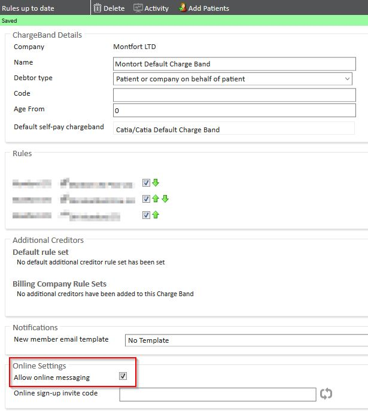
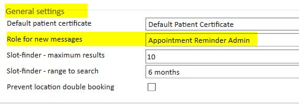
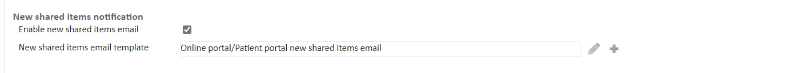
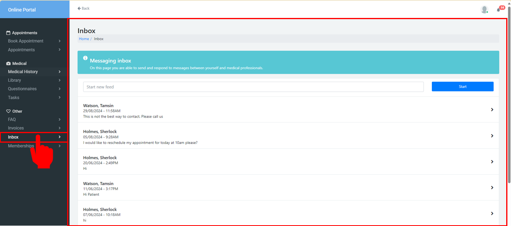
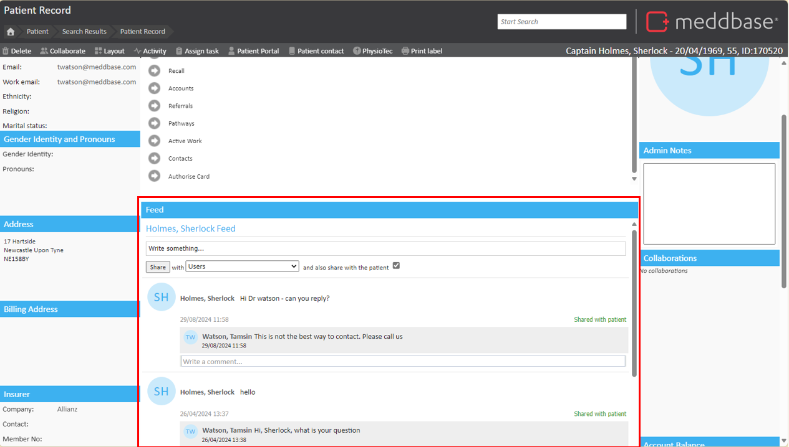
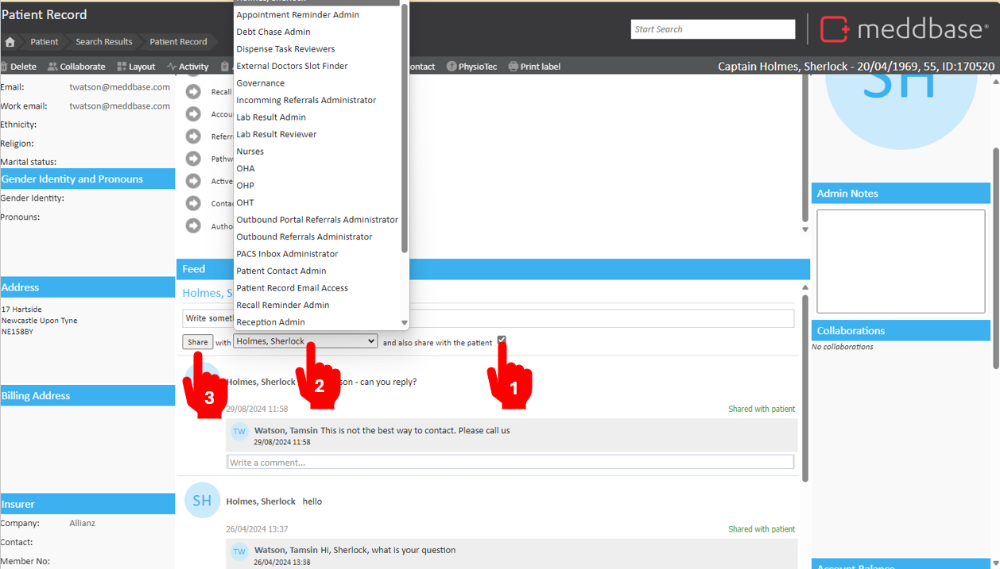

Meddbase includes a feature that allows patients to send and respond to messages via the Patient Portal to Users within a set Role Group within your Chamber. This Online Messaging feature is available to patients via the Patient Portal. To use this feature, the Patient Portal functionality must be enabled in your chamber.
To learn more about the Patient Portal, please refer to our article: Patient Portal Setup.
The purpose of this article is to provide guidance on enabling and using the Online Messaging feature in Meddbase, specifically through the Patient Portal. This article will explain:
To enable the messaging feature:
Navigate to Start Page > Admin > Billing Rules.
Select the appropriate charge band.
Tick the option Allow online messaging.

It’s important to set up notifications so that both your users and the patient know when a message has been sent.
When a new message is sent by a patient, the notification is sent to a role group. Users in that role group will be able to respond from that notification. By default, the role group that receives new message notification is Appointment Reminder Admin. To change this:

Please note, this will also send email notifications of any other shared items such as Documents or Medical Data.

Once Online Messaging is Enabled, Patients on the Charge Band will have a new page available called Inbox.
The patient in the portal will be able to select this option to display the feed shown below. They will be able to reply to previous messages and start new feeds.

Messages sent by patients will appear in Meddbase under the following path, Start Page > Patient > Find and Select patient > Patient Record > Feed.

In this section, you can:
View and reply to patient messages.
Choose who to share the message with by using the sharing options:
Tick and also share with the patient to share the message with both the patient and selected roles.
Use the dropdown menu to share messages exclusively with the patient or other roles.
